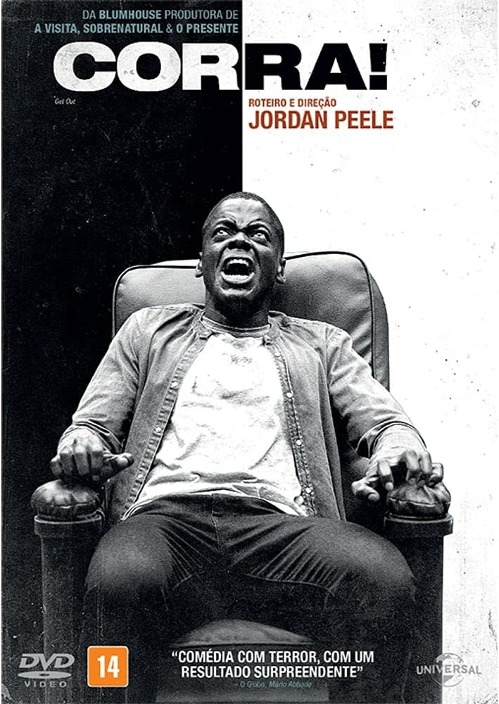
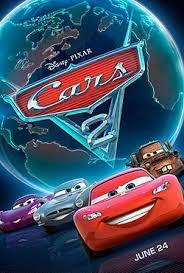

| Título |
Sinopse |
Lançamento |
Indicação etária |
Poster |
| Corra! |
Chris é um jovem fotógrafo negro que está prestes a conhecer os pais de Rose, sua namorada caucasiana.
Na luxuosa propriedade dos pais dela, Chris percebe que a família esconde algo muito perturbador. |
18 de maio de 2017 |
+14 |
 |
| Divertida Mente |
Com a mudança para uma nova cidade, as emoções de Riley, que tem apenas 11 anos de idade, ficam extremamente agitadas.
Uma confusão na sala de controle do seu cérebro deixa a Alegria e a Tristeza de fora, afetando a vida de Riley radicalmente. |
18 de junho de 2015 (Brasil) |
Livre |
 |
| Carros 2 |
O astro das corridas, Relâmpago McQueen, e o carro-guincho, Mate,
viajam para disputar o primeiro Grand Prix Mundial, que irá revelar o carro mais veloz do planeta.
Nessa jornada imperdível, Mate se envolve com um grupo de espionagem e vive grandes aventuras com seus amigos. |
23 de junho de 2011 (Brasil) |
Livre |
 |